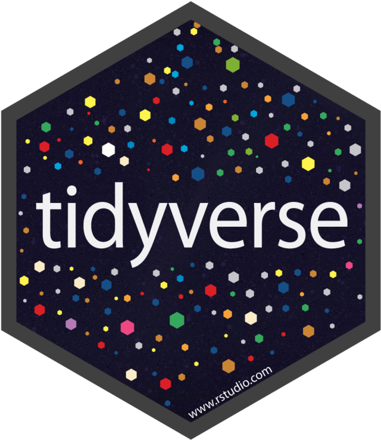

Conocimiento en R para Análisis de Datos
En el análisis de datos, cuento con experiencia en diversas etapas del proceso, desde la limpieza de datos hasta la visualización y análisis detallado. Mis habilidades en R incluyen el uso de las siguientes librerías:

Dplyr: Para la limpieza y transformación de datos, facilitando la manipulación eficiente de grandes conjuntos de datos.

Tidyr: Para la limpieza y organización de datos en un formato adecuado para el análisis.
Ggplot2: Para la creación de gráficos visualmente atractivos y detallados.

Tidyverse: Un conjunto de paquetes que simplifican la manipulación y visualización de datos.

Plotly: Para la creación de gráficos interactivos.

Shiny: Para la creación de aplicaciones web con interactividad.